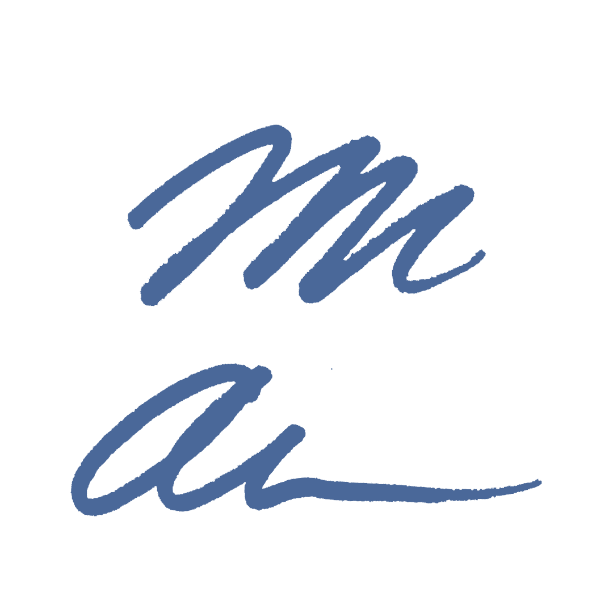
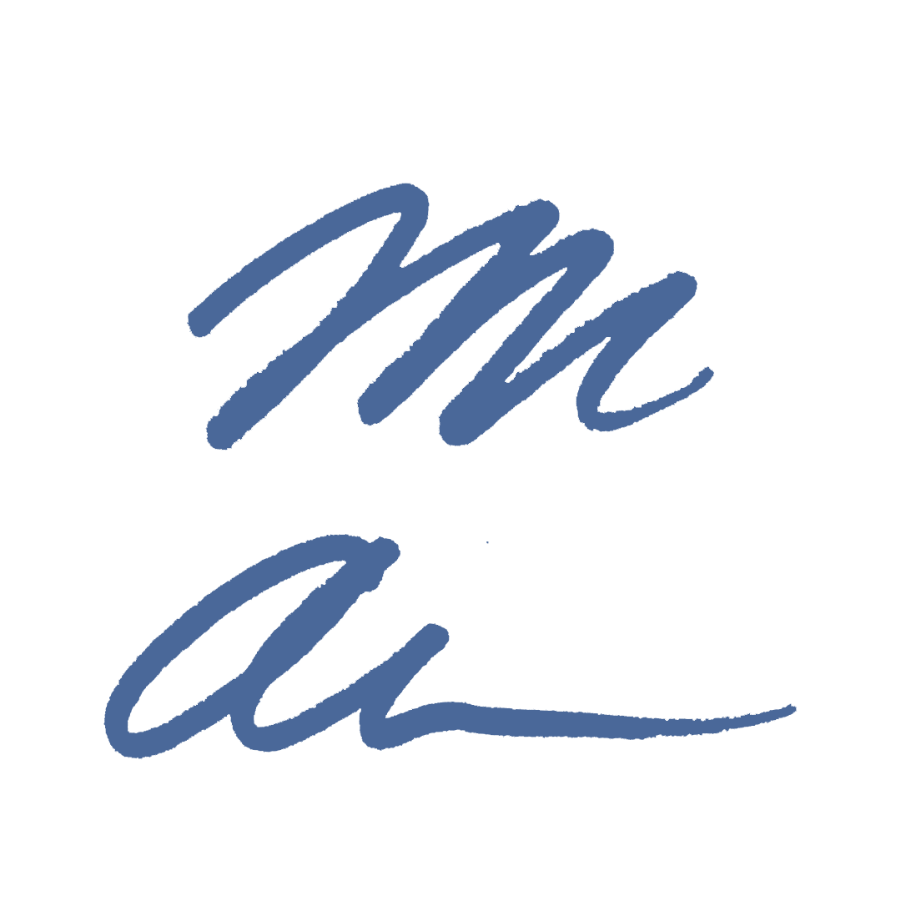

My name’s Mike Anderson, and I’m a designer and writer.
And an operations expert, too, all wrapped in one, 6’6” frame. I got my professional start in San Francisco, as a writer — for the personal-finance startup Nerdwallet — shortly after earning my English Degree at Davidson College, alma mater of basketball wunderkid Steph Curry.
Although I do still love to write — Words were my first, true love, after all — the last few years have found me re-igniting my Visual sensibilities. I took art classes ever year for 14 years, from early adolescence though college graduation. Initially, in the first few years of my professional journey, the pulse of San Francisco city life was louder than that visual curiosity.
A trip to Burning Man in 2017 is what really blew things open. In the lead up, I spent five months illustrating — and later laser-cutting, painting, and wood-cutting — a 4’x4’ Moon: a plexiglass-and-wooden disc with LEDs, which lights up in phases like the moon itself. When I finished that piece in my living room at 3 a.m., on a Wednesday night, I laughed — a huge grin stretched across my face — and, despite only four hours of sleep, that grin carried me through the next full day at work.
When the dust had settled after the big event, I knew what I needed to do.
I was re-born: a visual artist again and, in time, a graphic designer. I went back to school at night — while working in ad operations at Pandora during the day — and poured everything I had into this journey, to find more meaningful work. Today, I have several advanced courses under my belt, and I’ve built a healthy freelance business of my own.
What’s next?
Maybe working for you. I'm on the hunt for full-time work that will indulge my interest in design, and I'm always looking to expand my freelance roladex. Drop me a line here.
 
